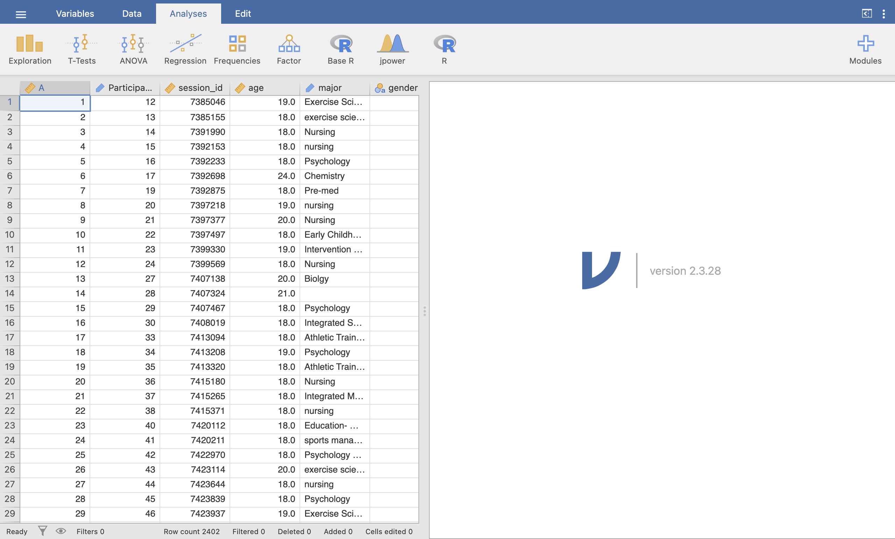
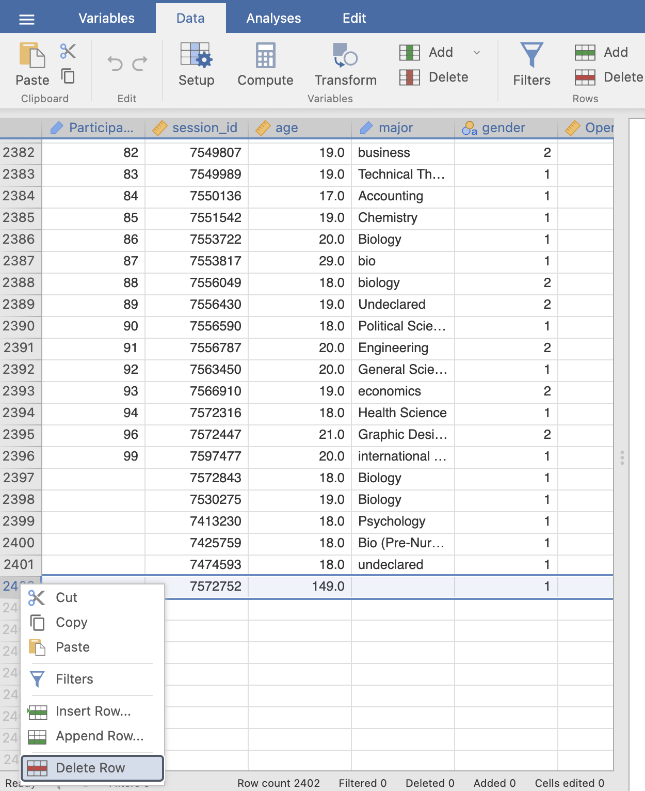
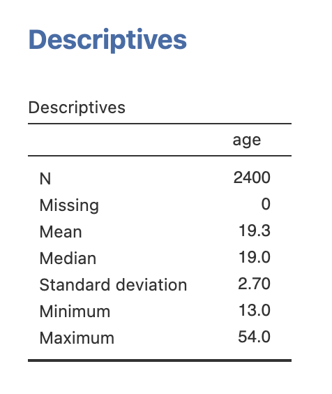
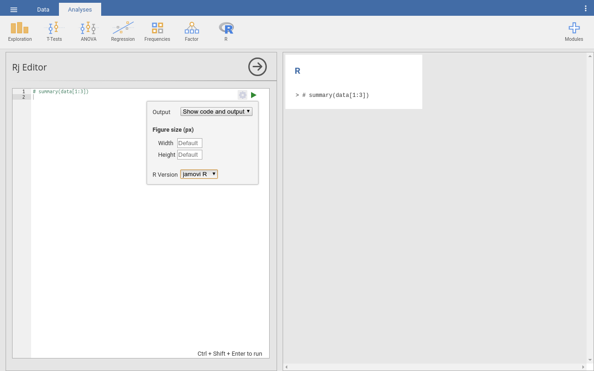
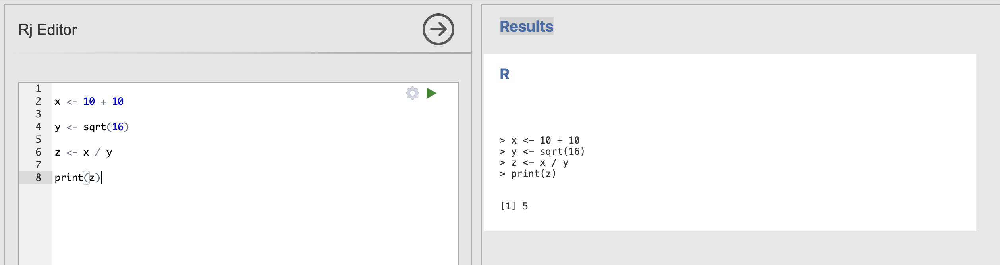
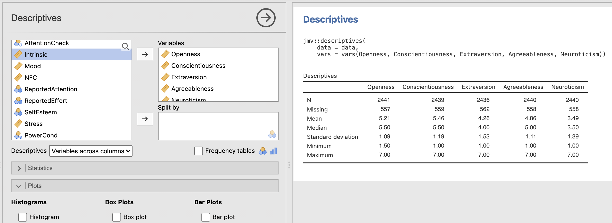

Week 1 : Descriptive Statistics, Data Processing and R
This week we will explore how to use Jamovi to compute and visualise descriptive statistics from a dataset. This will include some revision on Jamovi from last semester and an introduction on how we can use the R coding language to simplify complex data processing.
| Quantitative Methods | |
|---|---|
| Measures of central tendency | |
| Measures of dispersion and spread | |
| Measures of skew and normality | |
| Creating histograms and recognising different types of distribution |
| Data Skills | |
|---|---|
| Computing descriptive statistics in Jamovi | |
| Working with the Rj editor to use R code within Jamovi | |
| Learn the basics about functions and variables in R | |
| Computing descriptive statistics using R |
| Open Science | |
|---|---|
| Working with openly available research data |
The Dataset
We will be exploring data that was collected as part of the ‘Many Labs 3’ project (Ebersole et al., 2016). This collected data from university students in the USA across a wide range of cognitive, behavioural and demographic measures. We will be exploring a subset of this dataset concerning individual differences in personality measures. The experimenters collected data to compute the ‘Big Five’ personality factors from each participant. Wikipedia describes the factors as:
- Conscientiousness (efficient/organized vs. extravagant/careless)
- Agreeableness (friendly/compassionate vs. critical/rational)
- Neuroticism (sensitive/nervous vs. resilient/confident)
- Openness to experience (inventive/curious vs. consistent/cautious)
- Extraversion (outgoing/energetic vs. solitary/reserved)
This is a very simple (Gosling et al., 2003) and influential model that is used to summarise personality differences. Though it is popular, some researchers have criticised big five factors for conceptual and methodological reasons (Block, 1995). Read around and form your own view!
The data contains the average of two questions about each factor in which participants responded to questions using a scale from 1 to 7. A value of 1 indicates a low score and a value of 7 is a high score. For example, someone with an extraversion score of 2 is more introverted that someone with an extraversion score of 5.
The Challenge
We have data from a sample of students in a big data table. This raw data needs to be summarised and visualised so that we can turn this massive block of numbers into something intuitive.
By computing a range of key features from the data we can generate a concise overview of the main characteristics of the data.
Descriptive statistics and data cleaning in Jamovi
This section will have some revision from RM-A, please check your notes from RM-A for help with loading data and handling variables.
Let’s start by loading the dataset into Jamovi. You can download the file ML3AllSites.csv from canvas.

This is the original dataset provided by the authors of the paper! It is a massive dataset - take a moment to get familiar with it by answering the following questions.
Some of the questions will require you to run a descriptive statistics analysis on the age variable to answer them. Run what every you need to answer the questions.
There are 2998 participants in total - this is the number of rows in the dataset
No, unfortunately some data is missing from some participants. You can see empty cells in quite a few places across the dataset. This means that some analyses may have an N of less than 2998.
Jamovi has to make an educated guess at what type of data is included in each column. Looks like its made a mistake here and set age to be ‘Categorical’.
Change the data-type to be ‘Continuous’ instead.
The mean age is 19.3 years, typical for a student population. The standard deviation is 3.81.
This means that a participant who is 19.3+3.81 = 23.11 years old would be one standard deviation above the average age of the sample.
596 participants do not have information about age in the dataset! These might have not been collected, mixed up due to an error or lost during data processing.
2402 participants still do have age information. This is still a large sample.
The good news is that Jamovi detects this missing data and removes it for us when computing descriptive statistics. The estimate of the mean won’t be affected by this missing data.
Take a close look at the variable and its descriptive statistics.
The youngest age in the dataset is -2 and the oldest age is 149! both of these cannot be true and are probably typos made during data collection. We should be careful about interpreting the mean whilst these variables are included…
This process of exploring and understanding your data is a critical first step when working on a new analysis. Real data is rarely in perfect condition - we have to take some time and apply common sense to understand the data and what challenges there might be when analysing it.
If we do identify issues, such are large amounts of missing data, incorrect data types or mistakes in data entry, we can normally fix them - but only if they’ve been spotted! If we assume our data is perfect and go straight to the analysis then we could end up including a 149 year old student in our sample…
Data cleaning
Its probably not a good idea to include the data from the participants with impossible ages in our analysis. One simple step we can take is just to remove those rows from our analysis.
Remove the two participants with impossible ages. You can remove a row in Jamovi by right clicking on the row number (far left of the Data view) and clicking ‘Delete Row’.

Now you can recompute the descriptive statistics of your age variable and see what has changed.
I can save you some time! The -2 year old is on row 2165 and the 149 year old is on row 2997 (or 2996 if you’ve already deleted the youngster…).

The mean is pretty much the same - still 19.3 - but the standard deviation is much smaller now. It has reduced from 3.81 to 2.70. That is a close to 25% reduction in the estimate of the variability of this data - big difference. Including outliers like these can have a large impact on our analyses.
No! take a look at the Minimum value - we still have one participant who is 13 years old. Whilst this is more likely than finding a -2 or 149 year old student, it is still extremely unlikely.
Delete row 1062 to remove this participant as well.
The recomputed descriptive statistics now has an N=2399. Removing the 13 year old hasn’t changed our mean or standard deviation estimates very much so it was less important to remove this data point than the first two.
The youngest participant is now 16 which is more realistic (though very impressive for that 16 year old!).
This process can be intricate and involves a lot of clicking aorund in Jamovi - it would be easy to make a mistake and not notice. We’ll explore some more transparent and efficient ways to do this using R code during this course.
Big 5 personality factors
Ok, let’s move on to personality factors. As we said at the top, the big five factors are recorded on a scale from 1 to 7. A value of 1 indicates a low score and a value of 7 is a high score. So someone with an Extraversion score or 6 might be very outgoing where as someone with a score of 1 would be more of an introvert.
Compute the descriptive statistics for the big 5 personality factors.
Take some time to consider the data quality - use the questions we answered with age as a guide for what to think about.
You should get a descriptive statistics table that looks like this.

Yes, these look reasonable. The data range matches what we would expect from the rating scales and there is a similar amount of missing data in each of the five variables.
I wouldn’t do any further data cleaning based on these descriptives.
Next, let’s think about the distributions of these variables. Its great to think about summarising a dataset with its mean value, but this doesn’t tell us about the wider distribution.
Try your best with this question and don’t forget to speak with your tutor if you get stuck!
You have reproduced the descriptive statistics for the big 5 personality factors. Now you can do the same for some of the other factors in Table 2 of section 3.5 in Ebersole et al. (2016).
Specifically - try and compute the mean and standard deviations for:
- Self Esteem (see section 3.5.1 for details)
- Perceived Stress (see section 3.5.4)
- Need for cognition (see section 3.5.5) Can you find variables (columns) that correspond to these factors?
Note: Open datasets sometimes use shorthand for variable names rather than the names used in the manuscript. This is not ideal but does happen in practice! we should be ready take a little time to explore and understand a new dataset when working with it.
In this case the variables in the dataset to use are:
| In Manuscript | In Jamovi |
|---|---|
| Self Esteem | ‘SelfEsteem’ |
| Perceived Stress | ‘Stress’ |
| Need for cognition | ‘NFC’ |
Talk to your tutor if you’re getting stuck.
You should be able to reproduce the following table. Verify that the computed Mean and Standard Deviations match those published in table 2 of Ebersole et al (2016)

Install the Rj Add-On in Jamovi
Next you should install the Rj Add-On using this guide for installing Jamovi modules. Once installed you should have a new button on the Ribbon menu at the top of Jamovi…

Click on this and select ‘Rj Editor’ to open a window in which we can write R code! Click on the small cog icon and make sure that ‘Output’ is set to ‘Show code and output’.

We can use the left-hand window, named Rj editor, to write commands, using the R language. These are the straightforward text commands that tell the computer a series of steps that we wanted to carry out. These commands can be edited and rerun as many times as we need, they can even be shared with collaborators and included as part of scientific publication.
This is a very powerful tool once we have a written set of instructions to work with rather than individually clicking through instructions. Though it takes a bit longer to write the commands, our analysis is much more transparent and reproducible once it is done.
The outputs of the analysis defined in the Rj editor appear on the right-hand side of the Jamovi window as usual. To check this out, let’s explore using or as a calculator.
Try typing a set of sums or equations into the Rj editor. Include one sum on each line and include as many as you like. When you’re ready, you can tell RJ to run the commands by clicking on the green triangle in the top right corner of the RJ editor. This will automatically compute. All of the sums you to find and print the results out in the right hand side window. see the example below.
You can use the following symbols to define your sums.
| Symbol | Operation |
|---|---|
| + | Add |
| - | Subtract |
| * | Multiply |
| / | Divide |

Functions and Variables
Notice that the one of the equations in my example is a bit different to the others. The final example uses a function called sqrt as a shortcut to compute the square root of the number nine.
Functions are used to perform specific, predefined tasks, such as calculations, data transformations, or visualization. You can think of it as a “black box” that takes in a value, performs some internal calculation, and returns the result.
The sqrt function calculates the square root of a given number x.In R code, this looks something like this:
sqrt(x)with the ‘x’ replaced by any number. For example, we could compute the square root of 36 using the following command.
sqrt(36)Add this line to your Rj editor and check the result..
Many functions, take inputs contained in parentheses written after the name of the function. These inputs are sometimes known as the arguments of a function. In the last example, 36 is an argument for the function sqrt.
Sometimes functions take several arguments, and the arguments themselves can sometimes have specific names. For example.
round(12.345, digits = 0)will round the value x to a whole number with zero digits after the decimal point. Where as
round(12.345, digits = 2)would round the same number to preserve 2 digits after the decimal point. Try running these examples in Rj with a range of different numbers to get a sense of how it works.
Often, we don’t just want to see the result of some maths or a function call, we want to store the result to use again later. For this, we want to use variables. For example, here we store the result of a calculator sum in a variable named ‘y’
y <- 2 + 2If you run this in Rj, you’ll notice that we no longer get the number 4 printed to the screen. This is as the output is now caught and stored rather than printed out. If we still want to see what is contained in y, we can use another helpful function named print.
y <- 2 + 2
print(y)Will now also display the content of y.
A variable is an object that provides a labelled space to store information. The <- or = symbols indicate that we’re assigning some information to a variable (the two symbols behave the same way, you could see either).
Crucially, the information on the right hand side is assigned to a variable with the name from the left hand side.
A single analysis might have several lines of code that create, store and reuse a several different variables with several different functions. For example:

What does this R code do? what is the value of x, y and z?
x <- 10 + 10
y <- sqrt(16)
z <- x / yTry copying out and running the code in Rj.
You can add some print functions to see the value of the intermediate variables x and y as well. Try adding print(x) on the line immediately after x is defined.
Talk to your tutor if you’re getting stuck.
The final answers:
x is 20 and y is 4, so z = 20 / 4 which is 5.

Rj has a special feature that the data loaded into our spreadsheet is always contained in a special variable named data. We can refer to this data variable to view and run analyses on our dataset.
Compute Descriptive Statistics using R
Ok, back to statistics!
How can we use our new R skills to compute statistics?
he trick is to understand that all the analyses in Jamovi are actually carried out by functions in R. Each analysis we can select from the top ribbon in Jamovi corresponds to a function that can be called in the code. Similarly, all of the options that we select in the analysis, dialogue boxes, correspond to arguments for that function. Let’s take a look in practice.
To help understand this Jamovi provides an “R Syntax Mode”, in this mode, Jamovi produces equivalent R code for each analysis. To change to syntax mode, select the application menu (⋮) at the top right of Jamovi, and check the Syntax mode checkbox there.
With syntax mode on, compute the descriptive statistics for the big five personality factors again.
The outputs should look like this:

Notice that some R code has appeared at the top of the output table. This is relatively complex compared to our previous functions like print or sqrt. Let’s break it down a bit.
This is the code that Jamovi’s syntax mode will produce (with a little formatting to make the appearance simpler). Take a look through each part to understand what it does. Click the number in the annotation to highlight the corresponding part of the code.
1jmv::descriptives(
2 data = data,
3 vars = vars(Openness, Conscientiousness, Extraversion, Agreeableness, Neuroticism)
)- 1
- This is the name of the function that will do the computation for us. Everything contained within these parentheses are known as arguments, or inputs, for the function
- 2
-
The first input is named
dataand is assigned to be the special data variable that contains the data loaded into our spreadsheet. - 3
- The second input is a list of the data columns in our spreadsheet that we want to compute descriptives from.
There is a lot of information here that might be hard to understand at first. Try changing the analysis options using the Jamovi buttons and watch what happens to the R syntax. In particular, try adding and removing different variables to the analysis.
Once you’re ready, you can right click on this R syntax and click ‘Copy’ to copy it to your clipboard.

and pasting it into an Rj window - now you can click run to reproduce your descriptive statistics table using the underlying R code.
Great - well done on completing your first data analysis using R code! You should have the following output that will match the descriptives you’ve seen in the main Jamovi window.

Head back over to the Jamovi descriptives tab and try updating your analysis. You could change the variables that you are computing the descriptive statistics from, add in some extra metrics (such as the Skewness or Shapiro-Wilk) or even generate a plot like a histogram.
Note that the R code in the syntax box of the output will stay up to date with your changes. Pay attention to how the function updates when you select different options.
What is the R code required to compute descriptive statistics from the Openness and Conscientiousness variables, whilst including the Skewness metric, the Shapiro-Wilk statistic and a histogram?
Can you run this analysis in Rj?
Remember that the R code in the syntax mode will update as you define your analysis in Jamovi. Get the analysis right there and you can simply copy over the code.
Talk to your tutor if you’re getting stuck.
The final code should look like this
jmv::descriptives(
data = data,
vars = vars(Openness, Conscientiousness),
hist = TRUE,
skew = TRUE,
sw = TRUE)Reproducible data analysis
It probably seems like a small difference so far. After all, we same results for our analysis using the check, boxes in Jamovi or the code in R. The Jamovi analysis is certainly quicker to run for the first time and it’s more convenient when exploring your data.
However the R code has several crucial advantages.
- The R code is much more transparent about what is actually being run to generate the results and by sharing this code, we enable others to repeat our analysis. This makes it really straightforward to run and re-run identical analyses in situations where we need to be really sure that everybody has done the same thing. For example, if we want to be certain that two data sets have been analysed in an identical way then that our code would be the best way to do this.
- R code is the best way to share what we’ve done with the rest of the world. It is common practice for modern academic public it to include the code that was used to generate the results in the paper. This way everybody who wants to check can make sure they fully understand what the authors of the paper have done.
Finally, over the course of the semester we’ll see that R allows us to do much more than what is possible in Jamovi. We can define blocks of R code that can tidy-up and arrange our data, run multiple analyses and generate tables & figures all in one go. Much easier that clicking through all the menus each time we want to rerun an analysis!